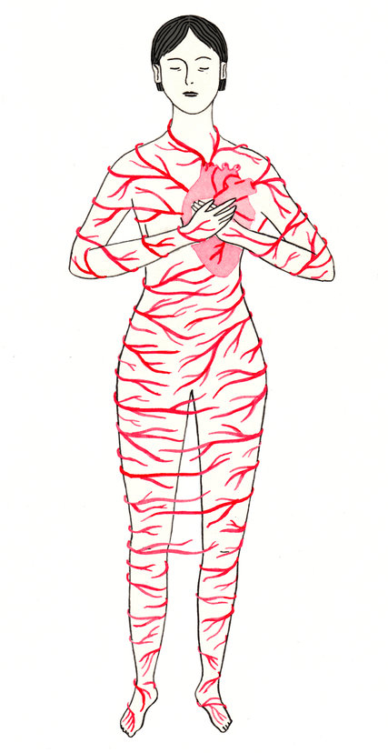
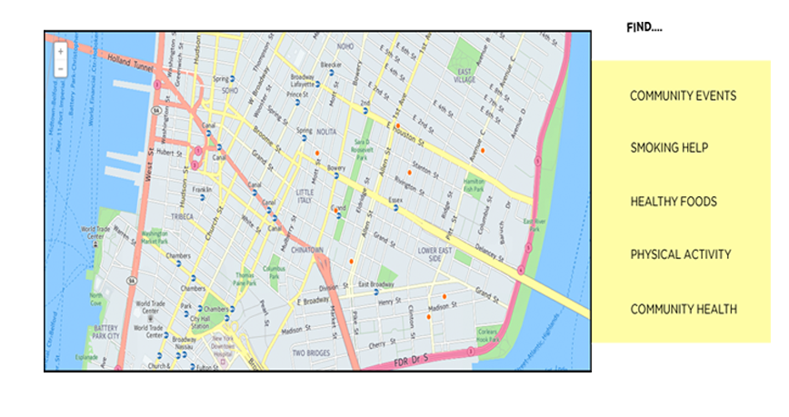

Español
中文
Women’s Heart Health
Cardiocascular Disease (CVD) is the leading cause of death for women
(Centre for Disease Control, 2014).
How much do you know about your risk? Take the Quiz!
The Women’s Heart Attack
In this article, Martha Lear describes her own experience of a heart attack and discusses the
myth of the ‘Hollywood Heart Attack,’ a widely propagated and largely male representation
of what it is like to experience a heart attack.
How much do you know about heart attack symtoms? Take the Quiz!

